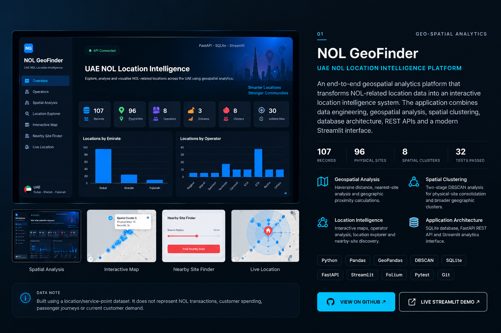

NOL GeoFinder
An end-to-end geospatial analytics platform that transforms NOL-related location data into an interactive location intelligence system. The application combines data engineering, geospatial analysis, spatial clustering, database architecture, REST APIs and an interactive Streamlit interface.
Haversine distance, nearest-site analysis and geographic proximity calculations.
Two-stage DBSCAN analysis for physical-site consolidation and broader geographic clusters.
Interactive maps, operator analysis, location explorer and nearby-site discovery.
SQLite database, FastAPI REST API and Streamlit analytics interface.
Built using a location/service-point dataset. It does not represent NOL transactions, customer spending, passenger journeys or current customer demand.